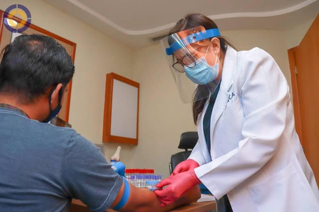

Medicina Ocupacional
Vigilancia de la salud, examen por examen.
Evaluaciones de ingreso, periódicas, pre y post‑vacacionales, reintegro y egreso. Historia clínico‑ocupacional, examen físico completo y certificado de aptitud al cargo, con su historia médica digitalizada y lista para auditorías del SSSL.
- Audiometría vía aérea y ósea (ruido ambiental)
- Espirometría (polvo, vapores y capacidad pulmonar)
- Electrocardiograma
- Laboratorio clínico
- Rayos X